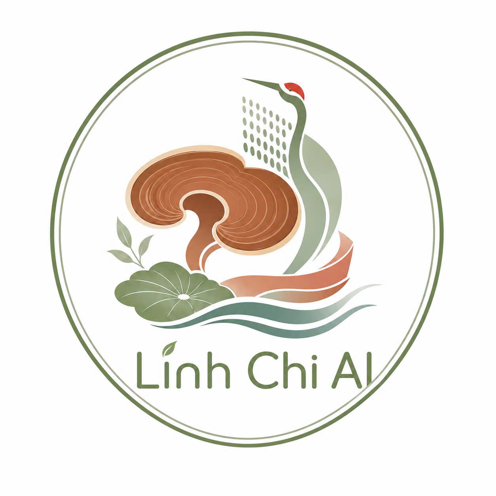

📍
Đang định vị...
Tải dữ liệu...
Hiện tại
--°
💧
--%
Độ ẩm
💨
-- m/s
Tốc độ gió
🔮 Dự báo ngày mai:
Đang tính toán...
📋 THÔNG TIN CHUNG SẢN PHẨM

🍄 Đơn vị quản lý:
Đội Trái Tim Xanh
🌱 Quản lý 3 giống:
LC1 • LC2 • LC3
🔎 Mục tiêu:
Truy xuất nguồn gốc, định danh giống, phát triển nấm Linh Chi
💬 AI hỗ trợ:
Giải đáp nguồn gốc • Chăm sóc • Hướng dẫn sử dụng
Trợ Lý AI Nấm Linh Chi
Hỏi đáp bằng văn bản & giọng nói
Xin chào! Tôi có thể giúp gì cho anh/chị về kỹ thuật nuôi trồng và sử dụng Nấm Linh Chi?
Gửi